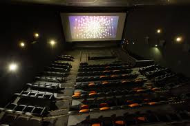

HISTÓRIAS DE VIDA
Cada vida é um filme esperando para ser contado. A Umbu.Doc transforma lembranças em legado, memórias em imagem, e experiências em narrativa. Histórias que tocam, que curam, que inspiram. Documentários únicos, feitos com alma e verdade.
O QUE PODEMOS CONTAR
- A trajetória de um avô contada por filhos e netos.
- Uma superação pessoal contada em primeira pessoa.
- A construção de um legado empresarial ou artístico.
- A história de um casal que venceu o tempo.
- A despedida de um ciclo importante da vida.
- A história de vida de alguém querido, narrada por ele próprio.
